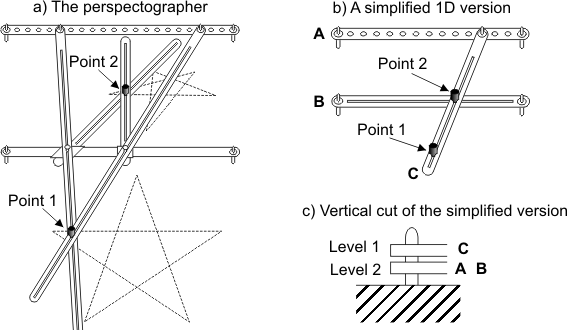

| The Perspectographer |
The perspectographer is a primitive, yet amazing, mechanical device invented something like three centuries ago. It works like this (see figure below): when you draw a picture moving point 1, point 2 traces the same drawing but "in perspective".

The perspectographer is made of pieces of wood. Some of them are fixed and some others can move along a plane. Besides, some pieces can overlap, so they have to be placed in different levels (i.e., different height). We want to build this machine. How many different levels will we need?
We have a description of our mechanical device, which consists of the total number of pieces and a list of pairs of pieces that overlap. For example, in the simplified version we have 3 pieces (A, B and C); A and C overlap, and B and C also overlap. Two overlapping pieces should always be placed in different levels. Your task is to compute the smallest number of levels that should be used to build the described machine. For example, in the simplified version of 3 pieces, we need 2 levels: one for C, and another for A and B.
The first line of the input contains an integer N, indicating the number of test cases. For each test case, the first line contains two integers M and P. Integer M indicates the total number of pieces. These pieces are called: A, B, C, D, ... You can assume that M < 20. Integer P indicates the number of pairs of pieces that overlap. P lines follow, each containing a pair of overlapping pieces.
For each test case the output should consist of a single integer, indicating the minimum number of levels that should be used to build the corresponding machine.
2 3 2 A C B C 6 4 A B C A C B F E
2 3